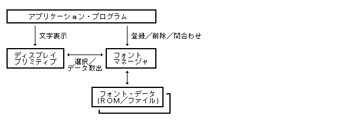

Специфікація BTRON3 (Український переклад) | Специфікація ОС Sakamura BTRON / BTRON3
Повернутися до змісту розділу Графічної оболонки
Попередня сторінка: 3.6 Менеджер даних та датабоксів (Повернутися)
Наступна сторінка: 3.8 Підсистема друку (Перейти)
Менеджер шрифтів (Font Manager) є базовим компонентом графічної оболонки BTRON3, що керує реєстрацією, візуалізацією, трансформацією (масштабуванням, поворотом) та наданням растрових та векторних шрифтів для виведення багатомовного тексту в кодуванні TRON Code.
Підсистема малювання графічних примітивів (Display Primitives) взаємодіє з Менеджером шрифтів для завантаження зображень символів та їхніх системних метрик (аскендер, дескендер, ширина, базовий крок).

Мал. 125: Схема взаємодії Менеджера шрифтів та підсистеми Display Primitives
Шрифти BTRON3 класифікуються за трьома основними критеріями:
- 1. Гарнітура / Родина шрифту (Font Family) :
Назва родини шрифтів (до 12 символів TRON Code, наприклад "Ming-style", "Gothic").
- 2. Клас шрифту (Font Class / FTC) :
32-бітне числове значення, що описує стилістичні характеристики дизайну символів для автоматичного добору шрифту-замінника при відсутності запитаної гарнітури (FTC_DEFAULT = 0x80000000).
- 3. Атрибути шрифту (Font Attributes) :
Варіації накреслення: товщина пера (Normal/Bold), нахил (Roman/Italic), моноширинність та пропорційність.
| fdef_fnt |
| Define Font Data |
| Реєстрація та визначення шрифтових даних у системі |
|
【Синтаксис / Прототип】
ERR fdef_fnt(LINK *lnk, W mode)
【Параметри】
LINK *lnk Посилання на файл шрифтових даних (ROM / File Font)
W mode Режим реєстрації шрифту (F_SYS, F_LOCAL)
【Значення, що повертається】
= 0 Успішне виконання
< 0 Помилка (Код помилки)
【Детальний опис】
Реєструє новий шрифтовий файл lnk у системному реєстрі Менеджера шрифтів.
| fdel_fnt |
| Delete Font Data |
| Вилучення шрифтових даних із системи |
|
【Синтаксис / Прототип】
ERR fdel_fnt(LINK *lnk)
【Параметри】
LINK *lnk Посилання на файл шрифтових даних
【Значення, що повертається】
= 0 Успішне виконання
< 0 Помилка (Код помилки)
| fdel_loc |
| Delete Local Font |
| Вилучення локального шрифту процесу |
|
【Синтаксис / Прототип】
ERR fdel_loc(ID fid)
【Параметри】
ID fid Ідентифікатор шрифту
【Значення, що повертається】
= 0 Успішне виконання
< 0 Помилка (Код помилки)
| fget_def |
| Get Default Font |
| Отримання параметрів системного шрифту за замовчуванням |
|
【Синтаксис / Прототип】
ERR fget_def(TC *family, FNT_ATTR *attr)
【Параметри】
TC *family Буфер для збереження назви гарнітури
FNT_ATTR *attr Буфер для збереження атрибутів шрифту
| fget_not |
| Get Font Notification |
| Отримання сповіщень про динамічні зміни шрифтового реєстру |
|
【Синтаксис / Прототип】
ERR fget_not(FNT_NOT *notif)
| flst_fon |
| List Fonts |
| Отримання списку всіх зареєстрованих шрифтів |
|
【Синтаксис / Прототип】
WERR flst_fon(FNT_INFO *buf, W max_cnt)
| fopn_fon |
| Open Font |
| Відкриття шрифту для використання у контексті |
|
【Синтаксис / Прототип】
FID fopn_fon(TC *family, FNT_ATTR *attr, W size)
【Параметри】
TC *family Назва гарнітури шрифту
FNT_ATTR *attr Атрибути шрифту
W size Розмір шрифту у точках BitMap або скалярі
【Значення, що повертається】
> 0 Дескриптор відкритого шрифту FID
< 0 Помилка (Код помилки)
| fcls_fon |
| Close Font |
| Закриття дескриптора шрифту |
|
【Синтаксис / Прототип】
ERR fcls_fon(FID fid)
| fset_fon |
| Set Font Parameters |
| Зміна розміру та параметрів відкритого шрифту |
|
【Синтаксис / Прототип】
ERR fset_fon(FID fid, W size, FNT_ATTR *attr)
| fget_fon |
| Get Font Parameters |
| Зчитання поточних параметрів шрифту FID |
|
【Синтаксис / Прототип】
ERR fget_fon(FID fid, FNT_PARAM *param)
| fset_ang |
| Set Font Rotation Angle |
| Налаштування кута повороту шрифту |
|
【Синтаксис / Прототип】
ERR fset_ang(FID fid, W angle)
| fget_ang |
| Get Font Rotation Angle |
| Зчитання кута повороту шрифту |
|
【Синтаксис / Прототип】
ERR fget_ang(FID fid, W *angle)
| fget_fam |
| Get Font Family Info |
| Отримання інформації про гарнітуру родини шрифтів |
|
【Синтаксис / Прототип】
ERR fget_fam(TC *family, FAM_INFO *info)
| fget_img |
| Get Font Character Image BitMap |
| Отримання растрового зображення символу BitMap |
|
【Синтаксис / Прототип】
ERR fget_img(FID fid, TC code, BITMAP *img)
【Параметри】
FID fid Дескриптор відкритого шрифту
TC code Код символу у кодуванні TRON Code
BITMAP *img Буфер для збереження растрового зображення символу (Вихід)
【Значення, що повертається】
= 0 Успішне виконання
< 0 Помилка (Код помилки)
【Детальний опис】
Генерує та повертає растрову маску BitMap для символу code у шрифті fid.
Повернутися до змісту специфікації BTRON3
Попередня сторінка: 3.6 Менеджер даних та датабоксів (Повернутися)
Наступна сторінка: 3.8 Підсистема друку (Перейти)